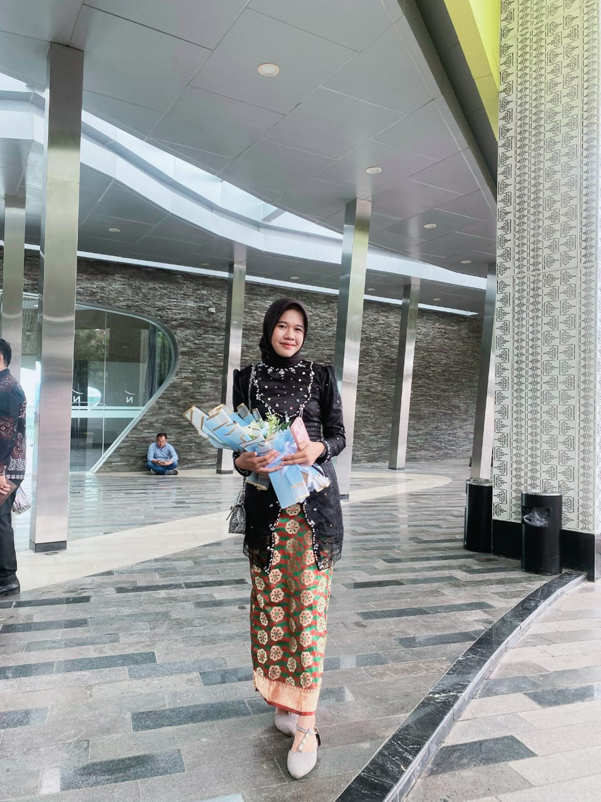

Tim Kami
Ahmad Galih irwanto
Frontend Developer
mahasiswa universita muhamadiyah kotabumi

Indri Kirani Nurlita
Content Writer
mahasiswa universita muhamadiyah kotabumi

Lulu Dinan
Multimedia Editor
mahasiswa universita muhamadiyah kotabumi